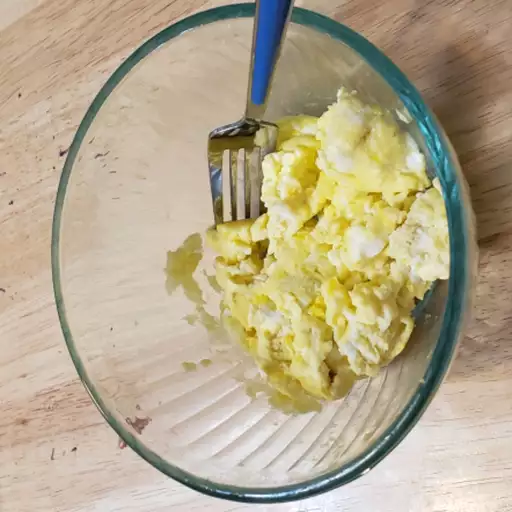

Fluffy Microwave Scrambled Eggs

Your microwave is the key to irresistibly fluffy scrambled eggs that are ready in mere minutes.
Don't believe us? Just try this top-rated recipe for microwave eggs.
Ingredients
- 4 eggs
- ¼ cup milk
- ⅛ teaspoon salt
Steps
- Break the eggs into a microwave-proof mixing bowl. Add milk and salt; mix well.
- Pop the bowl into the microwave and cook on high power for 30 seconds. Remove bowl, beat eggs very well, scraping down the sides of the bowl, and return to the microwave for another 30 seconds. Repeat this pattern, stirring every 30 seconds for up to 2 1/2 minutes. Stop when eggs have the consistency you desire.